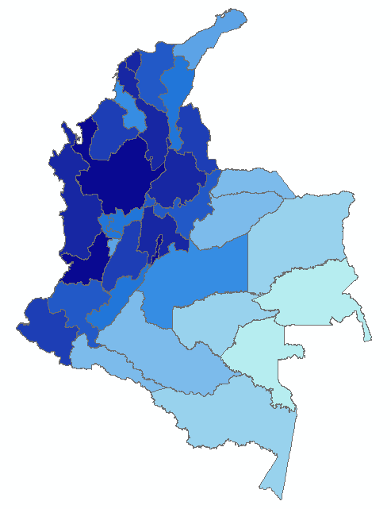
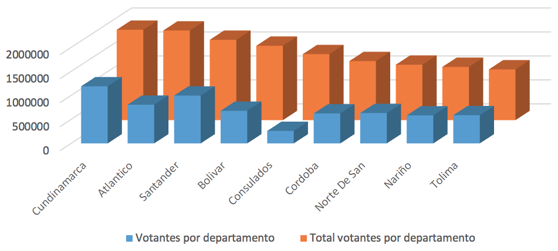
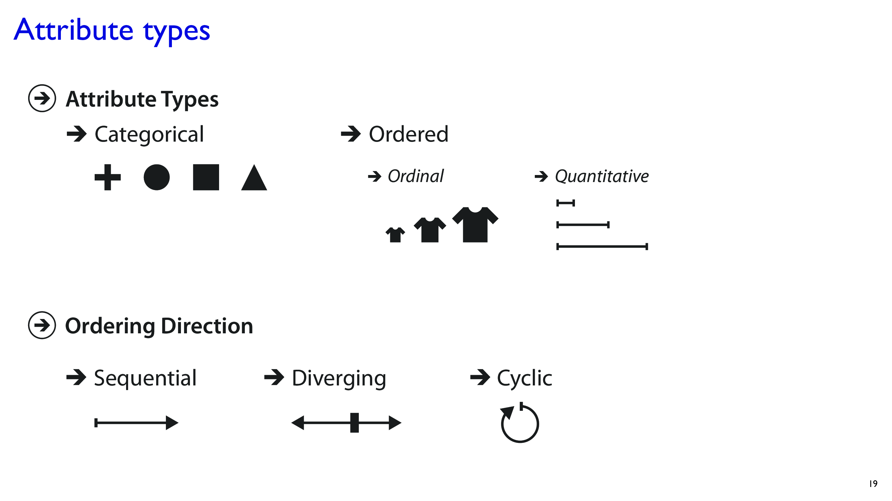
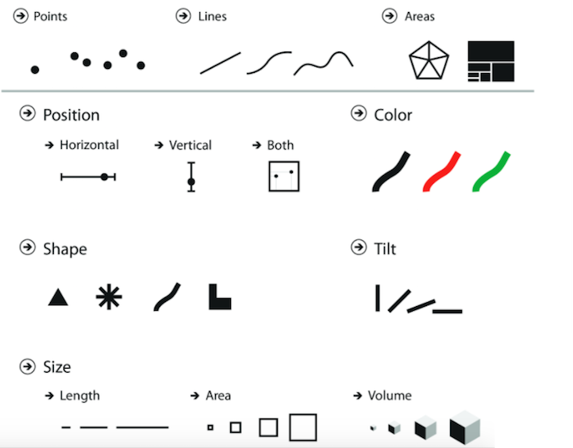
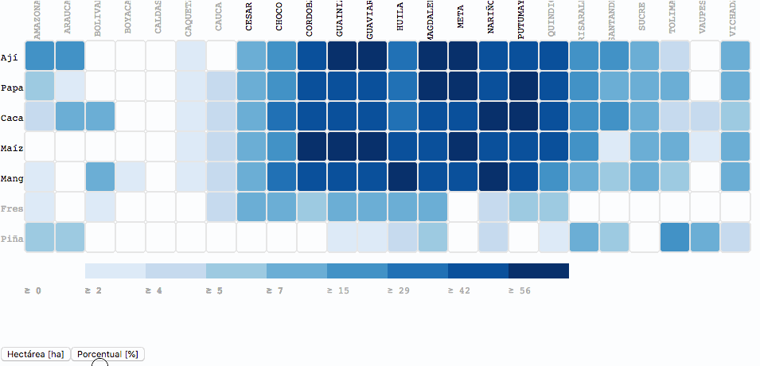

Taxis Inteligentes
Proyecto para el majoramiento de la movilidad de Bogotá basado en datos
Fabian Heredia y Manuel Avarado
@fabianheredia @cubosensei¿Cuál visualización es mejor?


Interrogantes
¿De qué depende?
¿Cómo evaluarlo?
¿Existe un marco de referencia?
Definiciones
Los sistemas de visualización basados en computador proporcionan representaciones visuales de conjuntos de datos diseñados para ayudar a las personas a realizar tareas de manera más efectiva.
Insight
- Entendimiento profundo
- Significativo
- No obvio
- Accionable
Marco de referencia
3 grandes ejes
- Datos | Usuarios | Tareas
- Marcas | canales
- Vista general | zoom y filtrado | detalles
Datos - Atributos

Marcas y canales

Atributos, Marcas y canales
Modismos
Barchart

Heatmap

Sunburst

Web AppBuilder for ArcGIS
Visual Analytics
Elementos de juicio para representar los datos
CCU 2018 - Planeta ESRI
@JofreManchola @JofreManchola